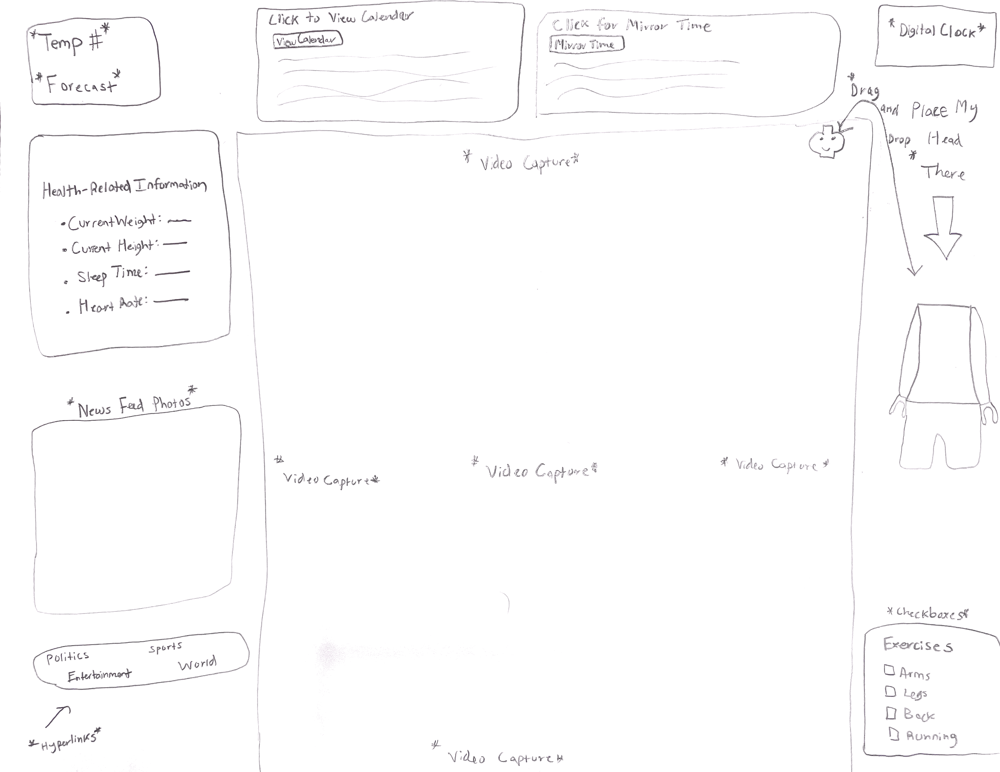

To get a C, you need to:
1. Provide the Sketch of your interface.
2. Include the general information in your sketch: personalized calendar, news feed, text messages, social feed items, clock, and weather.
3. Include the health-related information in your sketch: sleep, weight, exercises, and mirror time.
1. Sketch of my interface
-----------------------------------------------------------------------------------------------------------------------------------------------------------------------------------------------------------------------------------------------------------------------------------------
2. General Information: Calendar, News Feed, Clock, Weather, etc.
a) Calendar - I have provided a calendar, implemented through a csv file, in which when you press the button, it will bring up my calendar from many rows and have 7 values (Date,Year,Workout,Classes,Eat,Freetime,Work).
b) New Feed - The images in the lower left hand corner are from CNN, these images are cycling and will change every 10 seconds. The link are stored in a csv file and when you click on the hyperlink, they will take you to the main news article under the specific categories.
c) Clock - A nice digital clock has been implemented in the top right hand corner, it is NOT military time, so when it hits PM, it will stay as 1-12, not 13-
d) Weather - The weather in the top left hand corner gives the current weather in your area, as the API used is (https://api.weather.gov/gridpoints/LUB/48,32/forecast/hourly).
-----------------------------------------------------------------------------------------------------------------------------------------------------------------------------------------------------------------------------------------------------------------------------------------
3. Include the health-related information in your sketch: sleep, weight, exercises, and mirror time.
a) Sleep - Sleep Time has been added within the Health-Related Information section.
b) Weight - Weight has been added within the Health-Related Information section.
c) Exercises - Exercises have been added as their own section, as checkboxes give the user a chance to check off what exercises they have completed for the day.
d) Mirror Time - Mirror Time has been added as its own section, as a csv has been use to show this.
-----------------------------------------------------------------------------------------------------------------------------------------------------------------------------------------------------------------------------------------------------------------------------------------
To get a B, you need to:
1. Implement your Sketch in Processing or p5.js
2. Implement the general information : personalized calendar (from a csv or json file), news feed (from a csv or json file), current clock, and local weather (from a file or api).
3. Implement the health-related information in your sketch (select one of these): sleep, weight, exercises, and mirror time (from a csv or json file).
-----------------------------------------------------------------------------------------------------------------------------------------------------------------------------------------------------------------------------------------------------------------------------------------
1. Implement your Sketch in Processing or p5.js
a) The following sketch has been implemented in p5.js.
-----------------------------------------------------------------------------------------------------------------------------------------------------------------------------------------------------------------------------------------------------------------------------------------
2. Implement the general information : personalized calendar (from a csv or json file), news feed (from a csv or json file), current clock, and local weather (from a file or api).
a) Personalized Calendar: Implemented by CSV file.
b) News Feed: Implemented by CSV file.
c) Current Clock: Implemented through code.
d) Local Weather: Implemented by API.
-----------------------------------------------------------------------------------------------------------------------------------------------------------------------------------------------------------------------------------------------------------------------------------------
3. Implement the health-related information in your sketch (select one of these): sleep, weight, exercises, and mirror time (from a csv or json file).
a) Sleep: Implemented in Health-Related Information section.
b) Weight: Implemented in Health-Related Information section.
c) Exercises: Implemented in Exercises section.
d) Mirror Time: Implemented with CSV file.
-----------------------------------------------------------------------------------------------------------------------------------------------------------------------------------------------------------------------------------------------------------------------------------------
To get a A, you need to:
1. Implement one of the advanced features
2. Provide your github report page and 2-minute presentation video.
3. Please pay attention on the overal design and layout, and usability of your final interface.
Some advanced features include:
a) Allow the user to customize the display - e.g. the widget sizes and locations (drag and drop items in the desired location on the screen)
b) Voice command: play music when you are brushing your teeth or in the shower - how do you control the playlist?
c) Act as a light source (with different possible colours)
d) Your imagination
-----------------------------------------------------------------------------------------------------------------------------------------------------------------------------------------------------------------------------------------------------------------------------------------
1. Implement one of the advanced features
a) An advanced feature I have included was the drag and drop items in desired locations, as the user can drag and drop the lego man's head onto the body.
b) Another advanced feature I have included I have used was my imagination, as having my images in the lower left hand corner cycle every 10 seconds on their own, along with the checkboxes as well.
-----------------------------------------------------------------------------------------------------------------------------------------------------------------------------------------------------------------------------------------------------------------------------------------
2. Provide your github report page and 2-minute presentation video.
a) This is my github report page.
b) My 2-minute presentation video is below:
-----------------------------------------------------------------------------------------------------------------------------------------------------------------------------------------------------------------------------------------------------------------------------------------
3. Please pay attention on the overal design and layout, and usability of your final interface.
a) All designs, layouts, and usabilities within this mirror have been tested and paid attention.
-----------------------------------------------------------------------------------------------------------------------------------------------------------------------------------------------------------------------------------------------------------------------------------------
-----------------------------------------------------------------------------------------------------------------------------------------------------------------------------------------------------------------------------------------------------------------------------------------
Click this button to download the zip folder for my project!
-----------------------------------------------------------------------------------------------------------------------------------------------------------------------------------------------------------------------------------------------------------------------------------------
-----------------------------------------------------------------------------------------------------------------------------------------------------------------------------------------------------------------------------------------------------------------------------------------
Thank you and hopefully you enjoyed this project and presentation!
-----------------------------------------------------------------------------------------------------------------------------------------------------------------------------------------------------------------------------------------------------------------------------------------